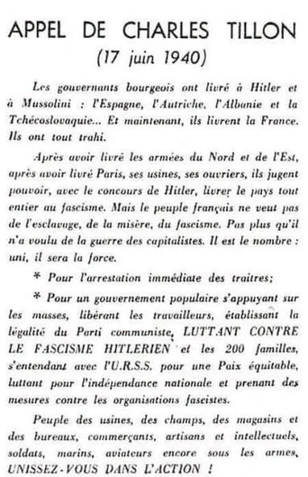
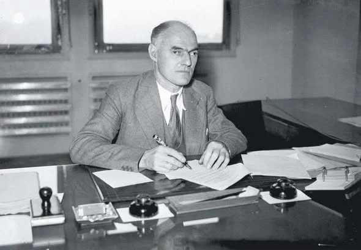

Publication relayée par le PCF 79
L’appel du 17 juin 1940 de Charles Tillon
Date de mise à jour indiquée par Facebook · 17 juin 2026
Texte de la publication · PCF Côte d’Or
Appel du 17 juin 1940 - En pleine débâcle, l'Appel de Charles Tillon, de la direction du PCF, une journée avant De Gaulle, pour démontrer encore une fois, que le PCF n'a pas attendu l'invasion de l'Union Soviétique par Hitler en 1941, pour entrer en Résistance !


Sources
PCF Côte d’Or · publication relayée par le PCF 79 · bibliothèque Facebook · AR-0002-FB-00750
À lire aussi · À Châteaubriant, l’hommage du 22 octobre aux fusillés · Le lien d’origine